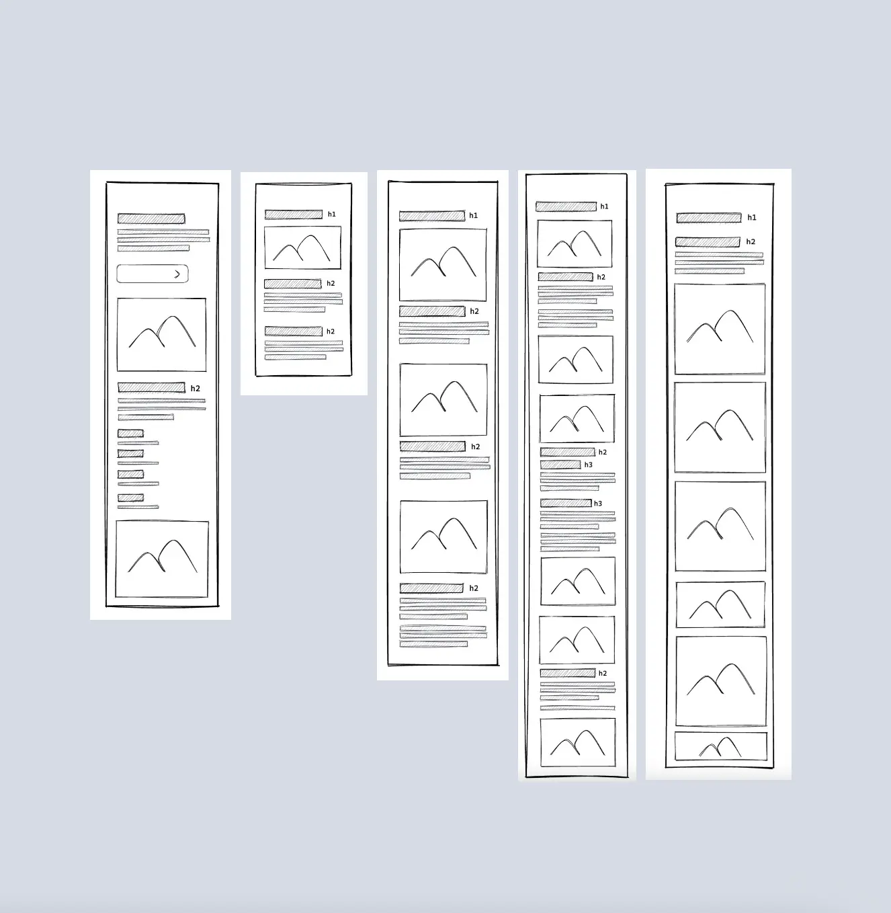
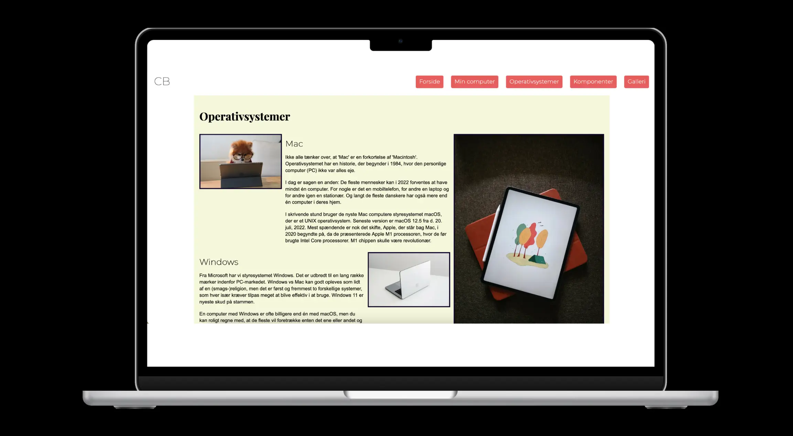
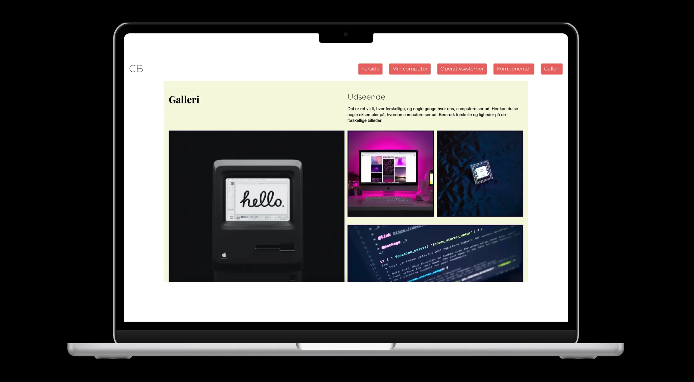
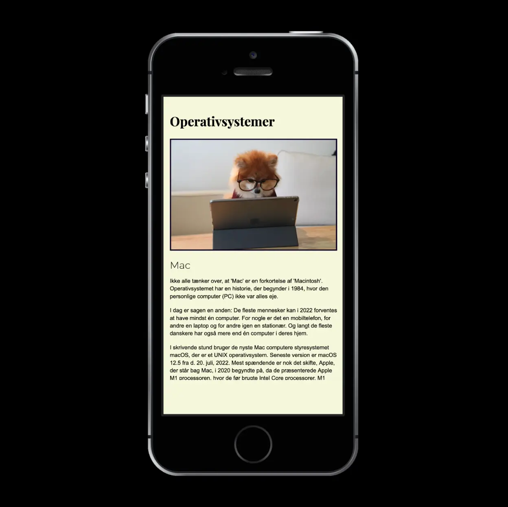
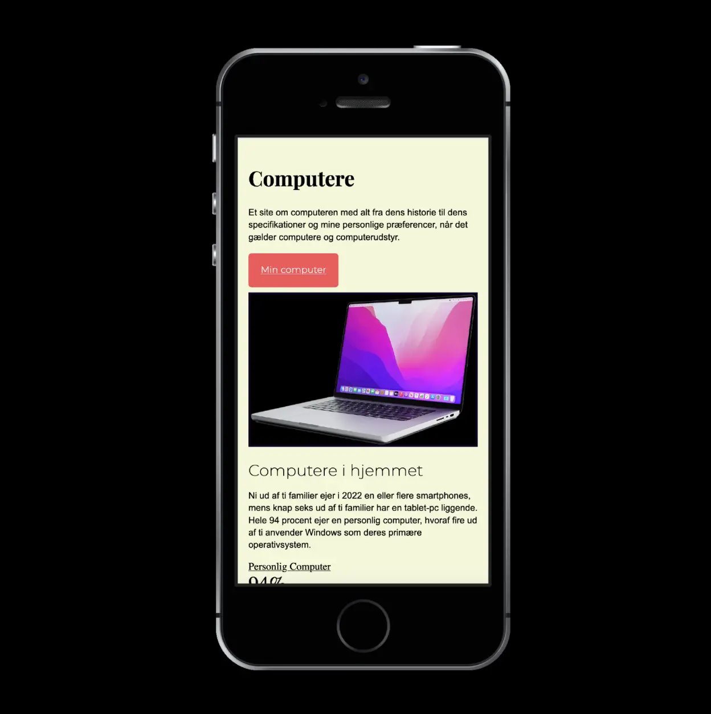

Mobilesite

I dette projekt udviklede jeg et responsivt mobilsite, som senere blev udvidet til et fuldt funktionelt website. Designet inkluderede brugen af to nøje udvalgte fonte, farvekombinationer, og et æstetisk flot gridlayout. Projektet fokuserede på en mobile-first tilgang, hvilket sikrede en optimal brugeroplevelse på tværs af enheder. Dette projekt gav mig både tekniske og designmæssige færdigheder og styrkede min forståelse af, hvordan man bygger moderne, responsivt webdesign.
WebsiteFigjam






